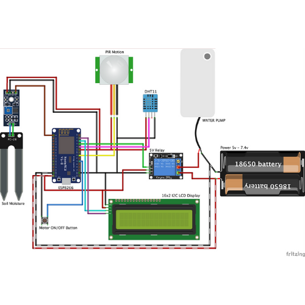

IOT Smart Plant Monitoring System

Introduction
This project aimed at harnessing the power of IoT to create an intelligent and user-friendly solution for monitoring the health and growth of plants. This system integrates sensors, connectivity, and data analysis to provide real-time insights into a plant's environmental conditions, enabling users to make informed decisions and ensure the optimal care of their plants.
Objectives
- Develop a system that can continuously monitor key environmental parameters crucial for plant growth, such as soil moisture, temperature, humidity, and light intensity.
- Implement sensors to collect data from the plant's surroundings and create a robust data analysis mechanism to interpret this data. Use this analysis to provide insights into the plant's health and well-being.
- Enable users to access real-time plant data remotely through a user-friendly interface, such as a mobile app or web dashboard. This feature allows plant owners to monitor their plants' status anytime, anywhere.
- Implement an alerting system that notifies users when the monitored parameters fall outside of predefined ranges. This feature ensures timely action to prevent plant stress or damage.
- Consider making the system suitable for educational and research purposes to encourage learning about plant biology, environmental science, and IoT technology.
Components
- Nodemcu ESP8266
- Soil Moisture Sensor
- PIR Motion Sensor
- Relay
- BreadBoard
- Jumpers
- 18650 Battery
- Tactile Push Button
- Water Pump
Circuit Diagram

Code
Download file